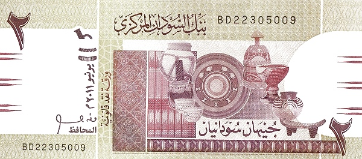
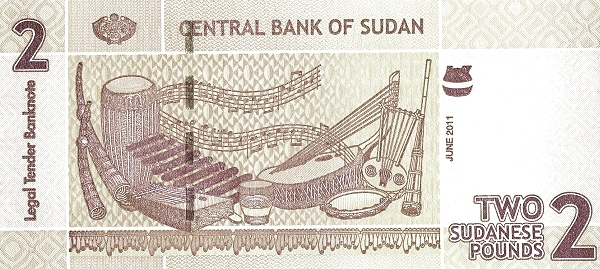
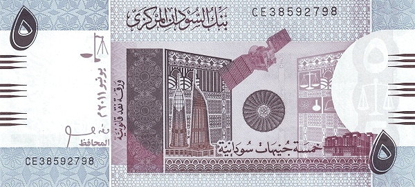
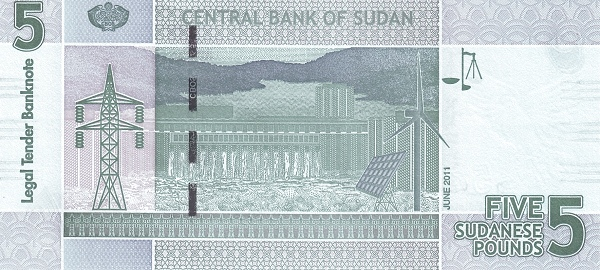
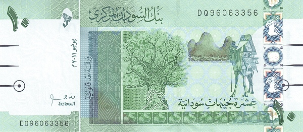
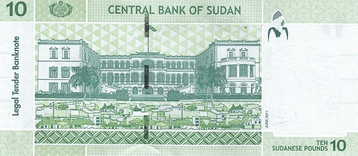
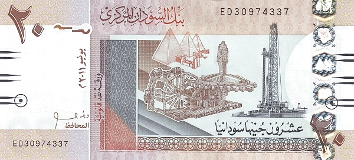
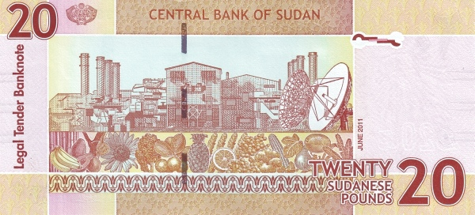
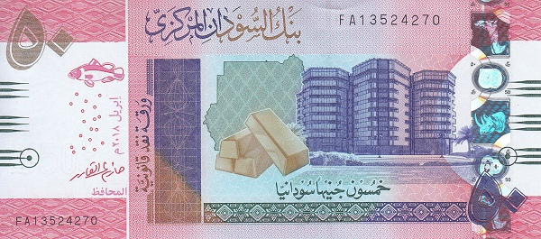
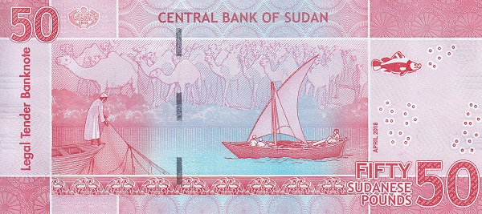

Судан - Суданский фунт
2 фунта
 Лицевая сторона - национальная посуда
Обратная сторона - музыкальные инструменты, ноты
5 фунтов
 Лицевая сторона - здания, спутник
Обратная сторона - дамба, линия электропередачи
10 фунтов
 Лицевая сторона - верблюд, дерево, буйвол
Обратная сторона - президентский дворец в Хартуме
20 фунтов
 Лицевая сторона - нефтяная платформа
Обратная сторона - промышленные здания, овощи и фрукты
50 фунтов
 Лицевая сторона - здание Банка Судана, золотые слитки
Обратная сторона - верблюды, рыбаки